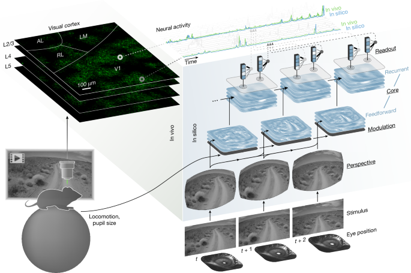
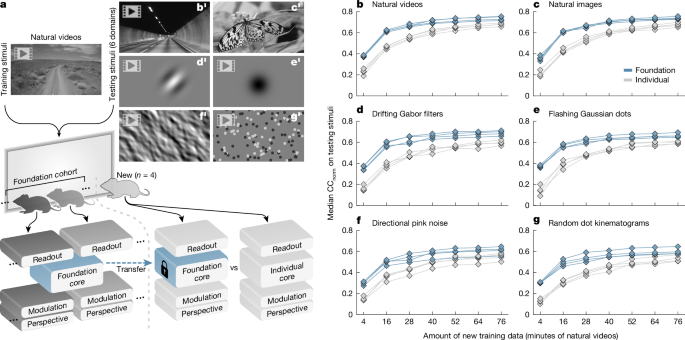

Foundation model of neural activity predicts response to new stimulus types
A foundation model trained on calcium-imaging data from ~135,000 mouse visual-cortex neurons across 14 mice achieves state-of-the-art prediction of dynamic neural responses to natural videos, then generalizes out-of-distribution — to Gabor patches, noise patterns, dot kinematograms, and static images — without any in-distribution training on those stimuli. Beyond response prediction, the model's compact readout embeddings ("functional barcodes") accurately predict anatomical cell types, dendritic morphology, and synaptic connectivity within the MICrONS connectomics dataset, demonstrating that a single foundation model can bridge functional and structural neuroscience at scale.
Why It Matters
- First brain foundation model with genuine out-of-distribution generalization. Previous data-driven neural models were trained and tested within the same stimulus domain; this model, trained only on natural videos, successfully predicts responses to wholly different parametric stimulus classes, validating the foundation-model paradigm for neuroscience.
- Data efficiency breakthrough for new subjects. A new mouse needs fewer than 30 minutes of natural video to reach the accuracy that a from-scratch model requires more than 60 minutes — directly reducing the experimental burden of in vivo neuroscience.
- Unlocks in silico experimentation after tissue destruction. Once trained, the model performs unlimited virtual experiments on any stimulus, solving a key bottleneck in projects (like MICrONS) where histological preparation ends in vivo recording.
- Bridges function and structure without anatomical supervision. Readout feature vectors predict morphologically defined excitatory cell types (11 classes, balanced accuracy 32% vs. 9% chance) and visual areas (68% vs. 25% chance), demonstrating emergent structure-function alignment learned purely from functional data.
- Open science infrastructure. Model weights, training pipeline, and recording pipeline are all publicly released (cajal/fnn), lowering barriers for the broader computational neuroscience community.
Why Nature (Editorial Fit)
- Paradigm-level advance: the paper does not improve one model but introduces a new modeling paradigm — the foundation model — to systems neuroscience, with implications across species and brain regions.
- Exceptional scale and rigor: ~135,000 neurons, 14 mice, 6 visual areas, >900 minutes of training data, and validation across multiple held-out stimulus domains and the independent MICrONS dataset.
- Cross-disciplinary reach: results connect deep learning, systems neuroscience, and connectomics — matching Nature's preference for findings that bridge fields.
- Landmark dataset utilization: the MICrONS dataset (1 mm³, ~70,000 neurons, ~500 million synapses) is one of the largest integrated structure-function datasets ever assembled; using a foundation model to mine it adds major scientific value.
Core Data — Sources & Volume
- Primary recording
- Two-photon calcium imaging (GCaMP6s, Slc17a7-Cre × Ai162 transgenic mice) of excitatory neurons from visual cortex (V1, LM, AL, RL, AM, PM) across 14 awake, behaving mice; approximately 135,000 neurons recorded in total. Foundation cohort: 8 mice, ~66,000 neurons, >900 min of natural video responses.
- Natural video stimuli
- Dynamic library of ecological natural videos (Sports-1M dataset, Pixabay clips); training data partitioned into 7 fractions (4–76 min) to probe data-efficiency curves. Exact video counts not stated in the article.
- Parametric stimuli
- Drifting Gabor filters, flashing Gaussian dots, directional pink noise (Monet), random dot kinematograms, static natural images — used for out-of-distribution testing only, not for model training.
- MICrONS dataset
- Machine Intelligence from Cortical Networks (MICrONS): functional recordings of >70,000 excitatory neurons across 14 sequential scans of a single mouse (1 mm³ volume, V1/LM/AL/RL); followed by serial electron microscopy reconstruction of ~60,000 excitatory neurons and ~500 million synapses. Available at bossdb.org/project/microns-minnie and microns-explorer.org.
- Connectomics annotations
- Cell-type annotations (11 excitatory classes, L2–L5) from Schneider-Mizell et al. (accompanying MICrONS article); coregistration via CAVEclient table
aibs_metamodel_mtypes_v661_v2; n = 16,561 unique EM neurons with functional readout weights after deduplication. - Imaging parameters
- Mesoscope at 6.3–6.9 Hz; field of view 1,200–2,430 × 1,100–3,000 µm; 2.5–3 µm/pixel x–y resolution; 4 cortical depth planes (L2/3, L4, L5).
- Code availability
- Model weights: cajal/fnn; training pipeline: cajal/foundation; imaging pipeline: cajal/pipeline.
| Dataset | Role | Volume / Scope | Access |
|---|---|---|---|
| In-house 2P calcium imaging | Foundation core training + validation | 14 mice, ~135,000 neurons, multiple visual areas; foundation cohort: 8 mice, ~66,000 neurons, >900 min | Partially via cajal/pipeline; raw data not independently archived |
| MICrONS functional recordings | Structure-function model validation; cell-type & connectivity prediction | >70,000 excitatory neurons, 14 scans, 1 mm³ volume, mean 42 min/scan | bossdb.org |
| MICrONS EM reconstruction | Cell morphology, cell-type labels, synaptic connectivity ground truth | ~60,000 excitatory neurons, ~500 million synapses; 11 cell-type classes | microns-explorer.org |
| Sports-1M / natural video libraries | Training stimuli (natural videos) | Dynamic library; exact clip count not stated; fractions of 4–76 min used per mouse | Stanford |
| Static natural images | Out-of-distribution testing | Walker et al. image library; count not stated | Not separately archived; referenced in paper |
Note: Exact natural video clip counts and total frame counts are not stated in the article. The ~135,000 neuron figure and >900 min training figure are taken verbatim from the article text.
Core Methods
- Modular ANN architecture: four modules — perspective (ray tracing + eye tracking to model the mouse's retinal view), modulation (LSTM encoding locomotion and pupil dilation as behavioral state), core (3D-convolutional DenseNet + convolutional LSTM or CvT-LSTM recurrent architecture), and readout (bilinear-interpolation + linear combination mapping core outputs to individual neuron responses).
- Foundation core training: a single shared core is trained on combined data from 8 mice ("foundation cohort"), capturing latent representations of vision shared across animals, cortical layers, and areas.
- Transfer learning: for new mice, only the perspective, modulation, and readout modules are fit; the foundation core is frozen. This reduces sample complexity from >60 min to <30 min of natural video to achieve high predictive accuracy.
- Performance metric: normalized correlation coefficient (CCnorm) = CCabs / CCmax, correcting for in vivo response variability (Schoppe et al. upper bound).
- Parametric tuning estimation: orientation/direction tuning via directional pink noise + von Mises mixture model fitting; spatial tuning via flashing Gaussian dots + spike-triggered average (STA) + 2D Gaussian fitting.
- Functional barcode extraction: 512-dimensional readout feature weights per neuron extracted from the trained model's readout module, then used as inputs to logistic regression classifiers for visual area and morphological cell-type prediction.
- Training objective: Poisson negative log-likelihood loss (outperforms MSE by 9.6%); stochastic gradient descent with Nesterov momentum; cosine decay learning rate with warm restart over 200 epochs.
- Lesion studies: systematic ablation of individual modules to quantify their contribution to predictive accuracy.
Core Figures & Tables





Tables in main text: 0 (Extended Data Table 1 lists recording session details; no main-text tables).